Chapter 4 Reporting data results #1
Download a pdf of the lecture slides covering this topic.
4.1 Guidelines for good plots
There are a number of very thoughtful books and articles about creating graphics that effectively communicate information. Some of the authors I highly recommend (and from whose work I’ve pulled the guidelines for good graphics we’ll talk about this week) are:
- Edward Tufte
- Howard Wainer
- Stephen Few
- Nathan Yau
You should plan, in particular, to read The Visual Display of Quantitative Information by Edward Tufte before you graduate.
This week, we’ll focus on six guidelines for good graphics, based on the writings of these and other specialists in data display. The guidelines are:
- Aim for high data density.
- Use clear, meaningful labels.
- Provide useful references.
- Highlight interesting aspects of the data.
- Make order meaningful.
- When possible, use small multiples.
For the examples, I’ll use dplyr for data cleaning and, for plotting, the packages ggplot2, gridExtra, and ggthemes.
library(tidyverse) ## Loads `dplyr` and `ggplot2`## Warning: package 'purrr' was built under R version 3.4.4library(gridExtra)
library(ggthemes)You can load the data for today’s examples with the following code:
library(faraway)
data(nepali)
data(worldcup)
library(dlnm)
data(chicagoNMMAPS)
chic <- chicagoNMMAPS
chic_july <- chic %>%
filter(month == 7 & year == 1995)4.2 High data density
Guideline 1: Aim for high data density.
You should try to increase, as much as possible, the data to ink ratio in your graphs. This is the ratio of “ink” providing information to all ink used in the figure. One way to think about this is that the only graphs you make that use up a lot of your printer’s ink should be packed with information.
The two graphs in Figure 4.1 show the same information, but use very different amounts of ink. Each shows the number of players in each of four positions in the worldcup dataset. Notice how, in the plot on the right, a single dot for each category shows the same information that a whole filled bar is showing on the left. Further, the plot on the right has removed the gridded background, removing even more “ink”.
Figure 4.1: Example of plots with lower (left) and higher (right) data-to-ink ratios. Each plot shows the number of players in each position in the worldcup dataset from the faraway package.
Figure 4.2 gives another example of two plots that show the same information but with very different data densities. This figure uses the chicagoNMMAPS data from the dlnm package, which includes daily mortality, weather, and air pollution data for Chicago, IL. Both plots show daily mortality counts during July 1995, when a very severe heat wave hit Chicago. Notice how many of the elements in the plot on the left, including the shading under the mortality time series and the colored background and grid lines, are unnecessary for interpreting the message from the data.
Figure 4.2: Example of plots with lower (left) and higher (right) data-to-ink ratios. Each plot shows daily mortality in Chicago, IL, in July 1995 using the chicagoNMMAPS data from the dlnm package.
By increasing the data-to-ink ratio in a plot, you can help viewers see the message of the data more quickly. A cluttered plot is harder to interpret. Further, you leave room to add some of the other elements I’ll talk about, including highlighting interesting data and adding useful references. Notice how the plots on the left in Figures 4.1 and 4.2 are already cluttered and leave little room for adding extra elements, while the plots on the right of those figures have much more room for additions.
One quick way to increase data density in ggplot2 is to change the theme for the plot. The theme specifies a number of the “background” elements to a plot, including elements like the plot grid, background color, and the font used for labeling. Some themes come with ggplot2, including:
theme_bwtheme_minimaltheme_void
You can find more themes in packages that extend ggplot2. The ggthemes package, in particular, has some excellent additional themes.
Figures 4.3 shows some examples of the effects of using different themes. All show the same information– a plot of daily deaths in Chicago in July 1995. The top left graph shows the graph with the default theme. The other plots show the effects of adding different themes, including the black-and-white theme that comes with ggplot2 (top right) and various themes from the ggthemes package. You can even use themes to add some questionable choices for different elements, like the Excel theme (bottom left).
Figure 4.3: Daily mortality in Chicago, IL, in July 1995. This figure gives an example of the plot using different themes.
4.3 Meaningful labels
Guideline 2: Use clear, meaningful labels.
Graphs often default to use abbreviations for axis labels and other labeling. For example, the default is for ggplot2 plots to use column names for the x- and y-axes of a scatterplot. While this is convenient for exploratory plots, it’s often not adequate for plots for presentations and papers. You’ll want to use short and easy-to-type column names in your dataframe to make coding easier, but you should use longer and more meaningful labeling in plots and tables that others need to interpret.
Furthermore, text labels can sometimes be aligned in a way that makes them hard to read. For example, when plotting a categorical variable along the x-axis, it can be difficult to fit labels for each category that are long enough to be meaningful.
Figure 4.4 gives an example of the same information shown with labels that are harder to interpret (left) versus with clear, meaningful labels (right). Notice how the graph on the left is using abbreviations for the categorical variable (“DF” for “Defense”), abbreviations for axis labels (“Pos” for “Position” and “Pls” for “Number of players”), and has the player position labels in a vertical alignment. On the right graph, I have made the graph easier to quickly read and interpret by spelling out all labels and switching the x- and y-axes, so that there’s room to fully spell out each position while still keeping the alignment horizontal, so the reader doesn’t have to turn the page (or their head) to read the values.
Figure 4.4: The number of players in each position in the worldcup data from the faraway package. Both graphs show the same information, but the left graph has murkier labels, while the right graph has labels that are easier to read and interpret.
There are a few strategies you can use to make labels clearer when plotting with ggplot2:
- Add
xlabandylabelements to the plot, rather than relying on the column names in the original data. You can also relabel x- and y-axes withscaleelements (e.g.,scale_x_continuous), and thescalefunctions give you more power to also make other changes to the x- and y-axes (e.g., changing break points for the axis ticks). However, if you only need to change axis labels,xlabandylabare often quicker. - Include units of measurement in axis titles when relevant. If units are dollars or percent, check out the
scalespackage, which allows you to add labels directly to axis elements by including arguments likelabels = percentinscaleelements. See the helpfile forscale_x_continuousfor some examples. - If the x-variable requires longer labels, as is often the case with categorical data (for example, player positions Figure 4.4), consider flipping the coordinates, rather than abbreviating or rotating the labels. You can use
coord_flipto do this.
4.4 References
Guideline 3: Provide useful references.
Data is easier to interpret when you add references. For example, if you show what it typical, it helps viewers interpret how unusual outliers are.
Figure 4.5 shows daily mortality during July 1995 in Chicago, IL. The graph on the right has added shading showing the range of daily death counts in July in Chicago for neighboring years (1990–1994 and 1996–2000). This added reference helps clarify for viewers how unusual the number of deaths during the July 1995 heat wave was.
Figure 4.5: Daily mortality during July 1995 in Chicago, IL. In the graph on the right, I have added a shaded region showing the range of daily mortality counts for neighboring years, to show how unusual this event was.
Another useful way to add references is to add a linear or smooth fit to the data, to help clarify trends in the data. Figure 4.6 shows the relationship between passes and shots for Forwards in the worldcup dataset. The plot on the right has added a smooth function of the relationship between these two variables.
Figure 4.6: Relationship between passes and shots taken among Forwards in the worldcup dataset from the faraway package. The plot on the right has a smooth function added to help show the relationship between these two variables.
For scatterplots created with ggplot2, you can use the function geom_smooth to add a smooth or linear reference line. Here is the code that produces Figure 4.6:
ggplot(filter(worldcup, Position == "Forward"),
geom_point(size = 1.5) +
theme_few() +
geom_smooth()The most useful geom_smooth parameters to know are:
method: The default is to add a loess curve if the data includes less than 1000 points and a generalized additive model for 1000 points or more. However, you can change to show the fitted line from a linear model usingmethod = "lm"or from a generalized linear model usingmethod = "glm".span: How wiggly or smooth the smooth line should be (smaller value: more wiggly; larger value: more smooth)se: TRUE or FALSE, indicating whether to include shading for 95% confidence intervals.level: Confidence level for confidence interval (e.g.,0.90for 90% confidence intervals)
Lines and polygons can also be useful for adding references, as in Figure 4.5. Useful geoms for such shapes include:
geom_hline,geom_vline: Add a horizontal or vertical linegeom_abline: Add a line with an intercept and slopegeom_polygon: Add a filled polygongeom_path: Add an unfilled polygon
You want these references to support the main data shown in the plot, but not overwhelm it. When adding these references:
- Add reference elements first, so they will be plotted under the data, instead of on top of it.
- Use
alphato add transparency to these elements. - Use colors that are unobtrusive (e.g., grays).
- For lines, consider using non-solid line types (e.g.,
linetype = 3).
4.5 Highlighting
Guideline 4: Highlight interesting aspects.
Consider adding elements to highlight noteworthy elements of the data. For example, in the graph on the right of Figure 4.7, the days of the heat wave (based on temperature measurements) have been highlighted over the mortality time series by using a thick red line.
Figure 4.7: Mortality in Chicago, July 1995. In the plot on the right, a thick red line has been added to show the dates of a heat wave.
In the below graphs, the names of the players with the most shots and passes have been added to highlight these unusual points.

One helpful way to annotate is with text, using geom_text(). For this, you’ll first need to create a dataframe with the hottest day in the data:
hottest_day <- chic_july %>%
filter(temp == max(temp))
hottest_day[ , 1:6]## date time year month doy dow
## 1 1995-07-13 3116 1995 7 194 Thursdaychic_plot + geom_text(data = hottest_day,
label = "Max",
size = 3)
With geom_text, you’ll often want to use position adjustment (the position parameter) to move the text so it won’t be right on top of the data points:
chic_plot + geom_text(data = hottest_day,
label = "Max",
size = 3, hjust = 0, vjust = -1)You can also use lines to highlight. For this, it is often useful to create a new dataframe with data for the reference. To add a line for the Chicago heat wave, I’ve added a dataframe called hw with the relevant date range. I’m setting the y-value to be high enough (425) to ensure the line will be placed above the mortality data.
hw <- data.frame(date = c(as.Date("1995-07-12"),
as.Date("1995-07-16")),
death = c(425, 425))
b <- chic_plot +
geom_line(data = hw,
aes(x = date, y = death),
size = 2)b4.6 Order
Guideline 5: Make order meaningful.
You can make the ranking of data clearer from a graph by using order to show rank. Often, factor or categorical variables are ordered by something that is not interesting, like alphabetical order.
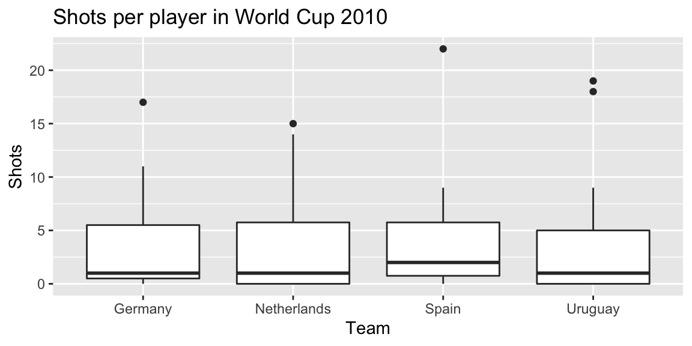
You can re-order factor variables in a graph by resetting the factor using the factor function and changing the order that levels are included in the levels parameter.
4.7 Small multiples
Guideline 6: When possible, use small multiples.
Small multiples are graphs that use many small plots showing the same thing for different facets of the data. For example, instead of using color in a single plot to show data for males and females, you could use two small plots, one each for males and females.
Typically, in small multiples, all plots use the same x- and y-axes. This makes it easier to compare across plots, and it also allows you to save room by limiting axis annotation.
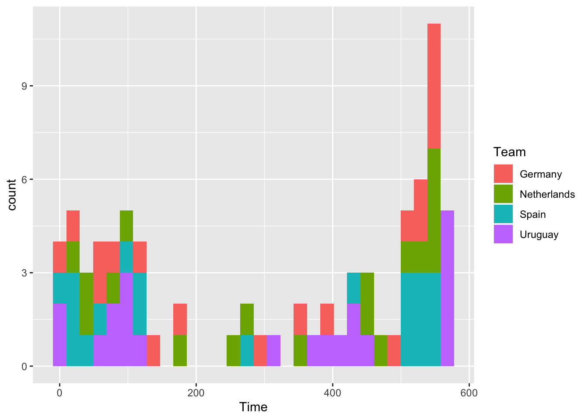
You can use the facet functions to create small multiples. This separates the graph into several small graphs, one for each level of a factor.
The facet functions are:
facet_grid()facet_wrap()
For example, to create small multiples by sex for the Nepali dataset, when plotting height versus weight, you can call:
ggplot(nepali, aes(ht, wt)) +
geom_point() +
facet_grid(. ~ sex)The facet_grid function can facet by one or two variables. One will be shown by rows, and one by columns:
## Generic code
facet_grid([factor for rows] ~ [factor for columns])The facet_wrap() function can only facet by one variable, but it can “wrap” the small graphs for that variable, so the don’t all have to be in one row or column:
## Generic code
facet_wrap(~ [factor for faceting], ncol = [number of columns])Often, when you do faceting, you’ll want to re-name your factors levels or re-order them. For this, you’ll need to use the factor() function on the original vector. For example, to rename the sex factor levels from “1” and “2” to “Male” and “Female”, you can run:
nepali <- nepali %>%
mutate(sex = factor(sex, levels = c(1, 2),
labels = c("Male", "Female")))Notice that the labels for the two graphs have now changed:
ggplot(nepali, aes(ht, wt)) +
geom_point() +
facet_grid(. ~ sex)To re-order the factor, and show the plot for “Female” first, you can use factor to change the order of the levels:
nepali <- nepali %>%
mutate(sex = factor(sex, levels = c("Female", "Male")))Now notice that the order of the plots has changed:
ggplot(nepali, aes(ht, wt)) +
geom_point() +
facet_grid(. ~ sex)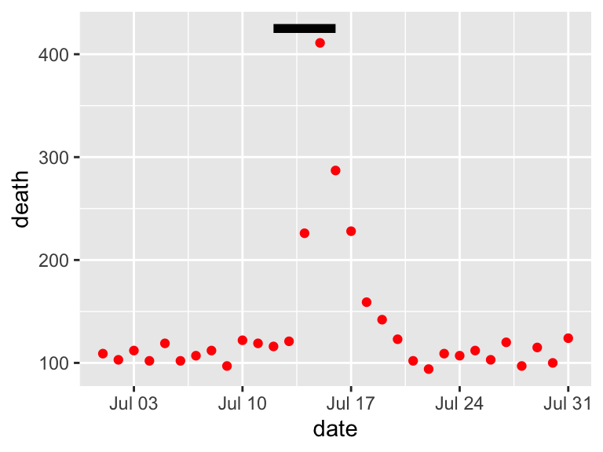
4.8 Advanced customization
4.8.1 Scales
There are a number of different functions for adjusting scales. These follow the following convention:
## Generic code
scale_[aesthetic]_[vector type]For example, to adjust the x-axis scale for a continuous variable, you’d use scale_x_continuous. You can use a scale function for an axis to change things like the axis label (which you could also change with xlab or ylab) as well as position and labeling of breaks.
For example, here is the default for plotting time versus passes for the worldcup dataset, with the number of shots taken shown by size and position shown by color:
ggplot(worldcup, aes(x = Time, y = Passes,
color = Position, size = Shots)) +
geom_point(alpha = 0.5)ggplot(worldcup, aes(x = Time, y = Passes,
color = Position, size = Shots)) +
geom_point(alpha = 0.5) +
scale_x_continuous(name = "Time played (minutes)",
breaks = 90 * c(2, 4, 6),
minor_breaks = 90 * c(1, 3, 5))Parameters you might find useful in scale functions include:
| Parameter | Description |
|---|---|
| name | Label or legend name |
| breaks | Vector of break points |
| minor_breaks | Vector of minor break points |
| labels | Labels to use for each break |
| limits | Limits to the range of the axis |
For dates, you can use scale functions like scale_x_date and scale_x_datetime. For example, here’s a plot of deaths in Chicago in July 1995 using default values for the x-axis:
ggplot(chic_july, aes(x = date, y = death)) +
geom_line() 
And here’s an example of changing the formating and name of the x-axis:
ggplot(chic_july, aes(x = date, y = death)) +
geom_line() +
scale_x_date(name = "Date in July 1995",
date_labels = "%m-%d")
You can also use the scale functions to transform an axis. For example, to show the Chicago plot with “deaths” on a log scale, you can run:
ggplot(chic_july, aes(x = date, y = death)) +
geom_line() +
scale_y_log10()
For colors and fills, the conventions for the names of the scale functions can vary. For example, to adjust the color scale when you’re mapping a discrete variable (i.e., categorical, like gender or animal breed) to color, you’d use scale_color_hue. To adjust the color scale for a continuous variable, like age, you’ll use scale_color_gradient.
For any color scales, consider starting with brewer first (e.g., scale_color_brewer, scale_color_distiller). Scale functions from brewer allow you to set colors using different palettes. You can explore these palettes at http://colorbrewer2.org/.
The Brewer palettes fall into three categories: sequential, divergent, and qualitative. You should use sequential or divergent for continuous data and qualitative for categorical data. Use display.brewer.pal to show the palette for a given number of colors.
library(RColorBrewer)
display.brewer.pal(name = "Set1", n = 8)
display.brewer.pal(name = "PRGn", n = 8)
display.brewer.pal(name = "PuBuGn", n = 8)


Use the palette argument within a scales function to customize the palette:
a <- ggplot(data.frame(x = 1:5, y = rnorm(5),
group = letters[1:5]),
aes(x = x, y = y, color = group)) +
geom_point()
b <- a + scale_color_brewer(palette = "Set1")
c <- a + scale_color_brewer(palette = "Pastel2") +
theme_dark()
grid.arrange(a, b, c, ncol = 3)ggplot(worldcup, aes(x = Time, y = Passes,
color = Position, size = Shots)) +
geom_point(alpha = 0.5) +
scale_color_brewer(palette = "Dark2",
name = "Player position")
You can also set colors manually:
ggplot(worldcup, aes(x = Time, y = Passes,
color = Position, size = Shots)) +
geom_point(alpha = 0.5) +
scale_color_manual(values = c("blue", "red",
"darkgreen", "darkgray"))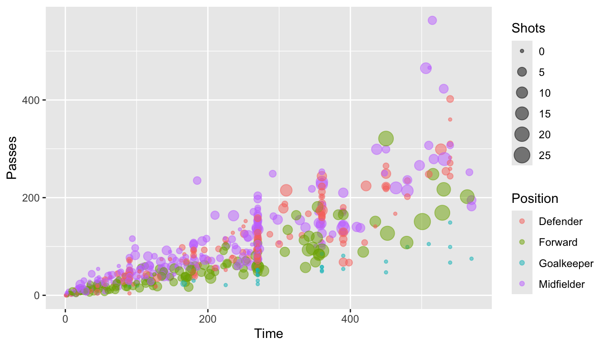
4.9 To find out more
Some excellent further references for plotting are:
- R Graphics Cookbook (book and website)
- Google images
For more technical details about plotting in R:
- ggplot2: Elegant Graphics for Data Analysis, Hadley Wickham
- R Graphics, Paul Murrell
4.10 In-course exercise
4.10.1 Designing a plot
For today’s exercise, you’ll be building a plot using the worldcup data from the faraway package. First, load in that data. The name of each player is in the rownames of this data. Use the tibble::rownames_to_column() function to move those rownames into a new column named Player. Also install and load the ggplot2 and ggthemes packages.
Next, say you want to look at the relationship between the number of minutes that a player played in the 2010 World Cup (Time) and the number of shots the player took on goal (Shots). On a sheet of paper, and talking with your partner, decide how the two of you would design a plot to explore and present this relationship. How would you incorporate some of the principles of creating good graphs?
4.10.1.1 Example R code
For this section, the only code needed is code to load the required packages, load the data, and move the rownames to a column named Player.
library(faraway)
data(worldcup)
head(worldcup, 2)## Team Position Time Shots Passes Tackles Saves
## Abdoun Algeria Midfielder 16 0 6 0 0
## Abe Japan Midfielder 351 0 101 14 0This dataset has the players’ names as rownames, rather than in a column. Once we start using dplyr functions, we’ll lose these rownames. Therefore, start by converting the rownames to a column called Player:
library(dplyr)
worldcup <- worldcup %>%
tibble::rownames_to_column(var = "Player")
head(worldcup, 2)## Player Team Position Time Shots Passes Tackles Saves
## 1 Abdoun Algeria Midfielder 16 0 6 0 0
## 2 Abe Japan Midfielder 351 0 101 14 0Install and load the ggplot2 package:
# install.packages("ggplot2")
library(ggplot2)
# install.packages("ggthemes")
library(ggthemes)4.10.2 Implementing plot guidelines #1
In this section, we’ll work on creating a plot like this:
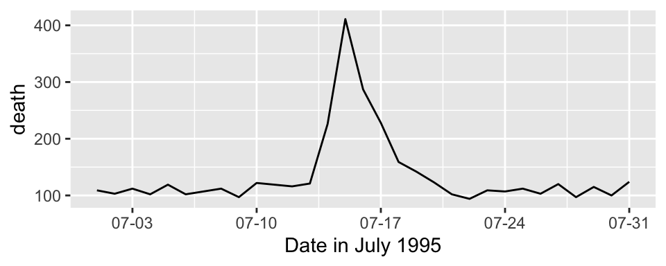
Do the following tasks:
- Create a simple scatterplot of Time versus Shots for the World Cup data. It should look like this:
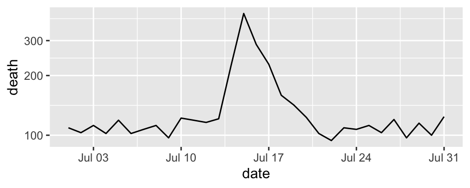
- Next, before any more coding, talk with your group members about how this graph is different from the simple one you created with
ggplotin the last section. Also discuss what you can figure out from this new graph that was less clear from a simpler scatterplot of Time versus Shots for this data. - Often, in graphs with a lot of points, it’s hard to see some of the points, because they overlap other points. Three strategies to address this are: (a) make the points smaller; and (b) make the points somewhat transparent. Try doing these first two with the scatterplot you’re creating. At this point, the plot should look something like this:
- Create a new column in the
worldcupdata calledtop_fourthat specifies whether or not theTeamfor that observation was one of the top four teams in the tournament (Netherlands, Uruguay, Spain, and Germany). Make the colors of the points correspond to whether the team was a top-four team. At this point, the plot should look something like this:
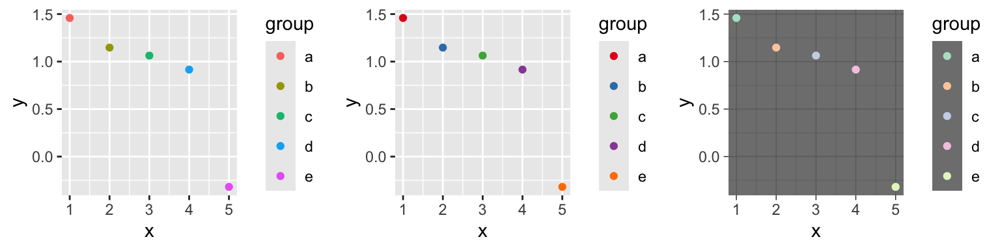
- Increase data density: Try changing the theme, to come up with a graph with a bit less non-data ink. From the
ggthemespackage, try some of the following themes:theme_few(),theme_tufte(),theme_stata(),theme_fivethirtyeight(),theme_economist_white(), andtheme_wsj(). Pick a theme that helps increase the graph’s data density. At this point, the plot should look something like this:
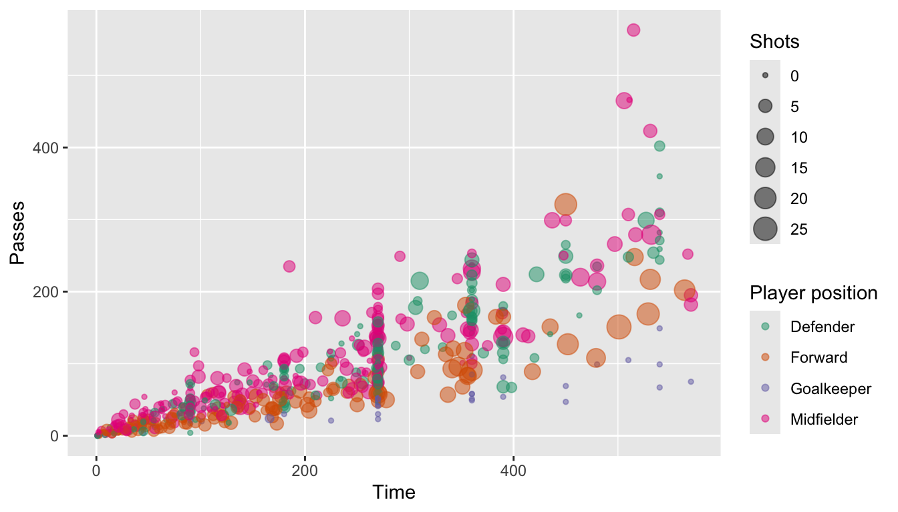
- Use meaningful labels: Use the
labs()function to make a clearer title for the x-axis. (You may have already written this code in the last section of this exercise.) In addition to setting the x-axis title with thelabsfunction, you can also set the title for the color scale (usecolor =within thelabsfunction). You may want to make a line break in the color title– you can use the linebreak character (\n) inside the character string with the title to do that. At this point, the plot should look something like this:
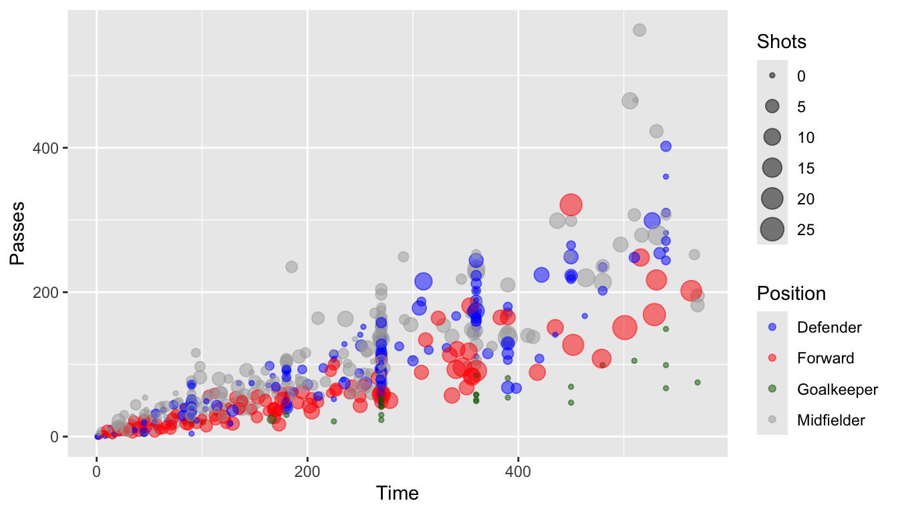
- Provide useful references: The standard time for a soccer game is 90 minutes. In the World Cup, all teams play at least three games, and then the top teams continue and play more games. Add a reference line at 270 minutes (i.e., the amount of standard time played for the three games that all teams play). At this point, the plot should look something like this:
4.10.2.1 Example R code
As a reminder, here’s the code to do a simple scatterplot ot Shots by Time for the worldcup data:
ggplot(data = worldcup) +
geom_point(mapping = aes(x = Time, y = Shots))Next, try to make it clearer to see the points by making them smaller and somewhat transparent. This can be done with the size and alpha aesthetics for geom_points. For the size aesthetic, a value smaller than about 2 = smaller than default, larger than about 2 = larger than default. For the alpha aesthetic, closer to 0 = more tranparent, closer to 1 = more opaque. As a reminder, in this case you are changing all of the points in the same way, so you will be setting those aesthetics to constant values. That means that you should specify the values outside of an aes call. This code could make these changes:
ggplot(data = worldcup) +
geom_point(mapping = aes(x = Time, y = Shots),
size = 1, alpha = 0.5)To create a new column called top_four, first create vector that lists those top four teams, then create a logical vector in the dataframe for whether the team for that observation is in one of the top four teams:
worldcup <- worldcup %>%
mutate(top_4 = Team %in% c("Spain", "Germany",
"Uruguay", "Netherlands"))
head(worldcup)## Team Position Time Shots Passes Tackles Saves Player top_4
## 1 Algeria Midfielder 16 0 6 0 0 Abdoun FALSE
## 2 Japan Midfielder 351 0 101 14 0 Abe FALSE
## 3 France Defender 180 0 91 6 0 Abidal FALSE
## 4 France Midfielder 270 1 111 5 0 Abou Diaby FALSE
## 5 Cameroon Forward 46 2 16 0 0 Aboubakar FALSE
## 6 Uruguay Forward 72 0 15 0 0 Abreu TRUEsummary(worldcup$top_4)## Mode FALSE TRUE
## logical 517 78To color points by this variable, use color = in the aes() part of the ggplot() call:
ggplot(data = worldcup) +
geom_point(mapping = aes(x = Time, y = Shots, color = top_4),
size = 1, alpha = 0.5)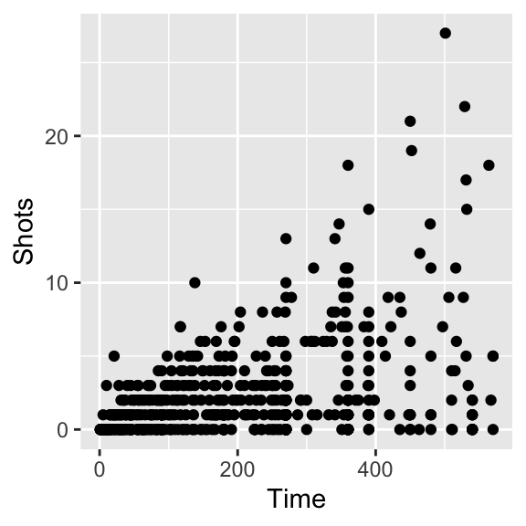
To increase the data density, try out different themes for the plot. First, I’ll save everything we’ve done so far as the object shot_plot, then I’ll try adding different themes:
shot_plot <- ggplot(data = worldcup) +
geom_point(mapping = aes(x = Time, y = Shots, color = top_4),
size = 1, alpha = 0.5)
shot_plot + theme_few()
shot_plot + theme_tufte()
shot_plot + theme_wsj()
shot_plot + theme_fivethirtyeight()
shot_plot + theme_stata()
shot_plot + theme_economist_white()
The data density is increased with the theme_few() theme, so I’ll use that:
ggplot(data = worldcup) +
geom_point(mapping = aes(x = Time, y = Shots, color = top_4),
size = 1, alpha = 0.5) +
theme_few()
To change the titles for some of the scales (the x-axis and color scale), you can use the labs() function. Note that you can use \n to add a line break inside one of these titles (I’ve done that for the title for the color scale):
ggplot(data = worldcup) +
geom_point(mapping = aes(x = Time, y = Shots, color = top_4),
size = 1, alpha = 0.5) +
theme_few() +
labs(x = "Time played in World Cup (minutes)",
color = "Team's final\nranking")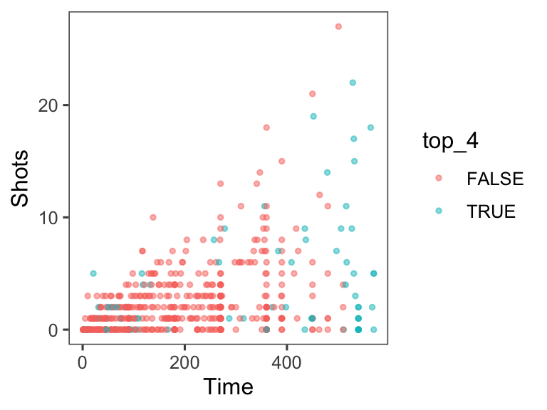
As an extra note, if you want to create nicer labels for the legend for color, convert the top_four column into the factor class, with the labels you want to use in the figure legend:
worldcup <- worldcup %>%
mutate(top_4 = factor(top_4, levels = c(TRUE, FALSE),
labels = c("Top 4", "Other")))
summary(worldcup$top_4)## Top 4 Other
## 78 517ggplot(data = worldcup) +
geom_point(mapping = aes(x = Time, y = Shots, color = top_4),
size = 1, alpha = 0.5) +
theme_few() +
labs(x = "Time played in World Cup (minutes)",
color = "Team's final\nranking")To add a reference line at 270 minutes of time, use the geom_vline() function. You’ll want to make it a light color (like light gray) and dashed or dotted (linetype of 2 or 3), so it won’t be too prominent on the graph:
ggplot(data = worldcup) +
geom_vline(xintercept = 270, color = "lightgray", linetype = 2) +
geom_point(mapping = aes(x = Time, y = Shots, color = top_4),
size = 1, alpha = 0.5) +
theme_few() +
labs(x = "Time played in World Cup (minutes)",
color = "Team's final\nranking")
4.10.3 Implementing plot guidelines #2
- Highlighting interesting data: Who had the most shots in the 2010 World Cup? Was he on a top-four team? Use
geom_text()to label his point on the graph with his name (try out some different values ofhjustandvjustin this function call to get the label in a place you like). At this point, the plot should look something like this:
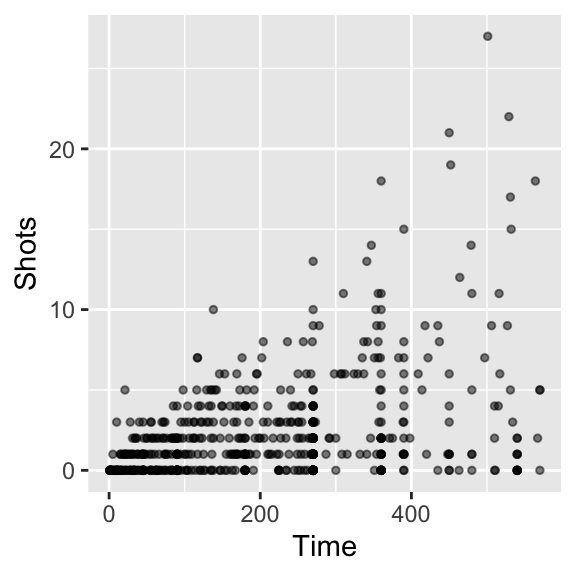
- For labeling the player with the top number of shots, instead of only using the player’s name, use the following format: “[Player’s name], [Player’s team]”. (Hint: You may want to use
mutateto add a new column, where you usedpaste0to paste together the player’s name,", ", and the team name.) At this point, the plot should look something like this:

- Create small multiples. The relationship between time played and shots taken is probably different by the players’ positions. Use faceting to create different graphs for each position. At this point, the plot should look something like this:
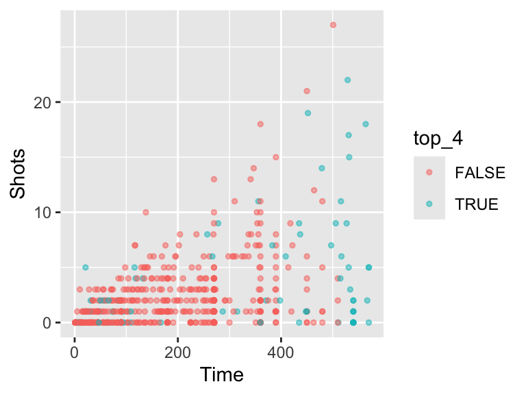
- Make order meaningful: What order are the faceted graphs currently in? Offensive players have more chances to take shots than defensive players, so that might be a useful ordering for the facets. Re-order the
Positionfactor column to go from nearest your own goal to nearest the opponents goal, and then re-plot the graph from the previous step.

4.10.3.1 Example R code
To add a text label with just the player with the most shots, you’ll want to create a new dataframe with just the top player. You can use the top_n function to do that (the wt option is specifying that we want the top player in terms of values in the Shots column):
top_player <- worldcup %>%
top_n(n = 1, wt = Shots)Now you can use geom_text() to label this player’s point on the graph with his name. You may need to mess around with some of the options in geom_text(), like size, hjust, and vjust (hjust and vjust say where, in relation to the point location, to put the label), to get something you’re happy with.
If you want to put both the player’s name and his team, you can add a mutate() function when you create the new dataframe with just the top player, and then use this for the label:

To create small multiples, use the facet_wrap() command (you’ll probably want to use ncol to specify to use four columns):
To re-order the Position column of the dataframe, add a mutate statement before you pipe into the plotting code. Use the levels option of the factor() function– whatever order you put the factors in for this argument will be the new order in which R saves the levels of this factor.
Note from this code example that you can use the levels function to find out the levels and their order for a factor-class vector.
worldcup <- worldcup %>%
mutate(Position = factor(Position,
levels = c("Goalkeeper", "Defender",
"Midfielder", "Forward")))
levels(worldcup$Position)## [1] "Goalkeeper" "Defender" "Midfielder" "Forward"4.10.4 Data visualization cheatsheet
RStudio comes with some excellent cheatsheets, which provide quick references to functions and code you might find useful for different tasks. For this part of the group exercise, you’ll explore their cheatsheet for data visualization, both to learn some new ggplot2 code and to become familiar with how to use this cheatsheet as you do your own analysis.
- Open the data visualization cheatsheet. You can do this from RStudio by going to “Help” -> “Cheatsheets” -> “Data Visualization with ggplot2”.
- Notice that different sections give examples with some datasets that come with either base R or ggplot2. For example, under the “Graphical Primitives” section, there is code defining the object
aas a ggplot object using the “seals” dataset:a <- ggplot(seals, aes(x = long, y = lat)). - Go through the cheatsheet and list all of the example datasets that are used in this cheatsheet. Open their helpfiles to learn more about the data.
- Create the example datasets
athroughlandsthroughtusing the code given on the cheatsheet. - Pick at least one example to try out from each of the following sections: “Graphical Primitives”, “One Variable”, at least three subsections of “Two Variables”, “Three Variables”, “Scales”, “Faceting”, and “Position Adjustments”. As you try these, try to figure out any aesthetics that you aren’t familiar with (e.g.,
ymin,ymax). Also, use helpfiles for the geoms to look up parameters you aren’t familiar with (e.g.,statforgeom_area). If you can’t figure out how to interpret a plot, check the helpfile for the associated geom. Note: For thengeom used in “scales”, it should be defined asn <- d + geom_bar(aes(fill = fl)).
4.10.4.1 Example R code
The code for opening the helpfiles for the example datasets is:
?seals
?economics
?mpg
?diamonds
?USArrestsNote that, for USArrests, only some of the columns are pulled out (e.g., murder = USArrests$murder) to use in the data example dataframe. Further, the “Visualizing error” examples use a dataframe created specifically for these examples, called df.
Some of the base R and ggplot2 example datasets have become fairly well-known. Some that you’ll see very often in examples are the iris, mpg, and diamonds datasets.
All of the code to create the datasets a through l and s through t is given somewhere on the cheatsheet. Here it is in full:
a <- ggplot(seals, aes(x = long, y = lat))
b <- ggplot(economics, aes(date, unemploy))
c <- ggplot(mpg, aes(hwy))
d <- ggplot(mpg, aes(fl))
e <- ggplot(mpg, aes(cty, hwy))
f <- ggplot(mpg, aes(class, hwy))
g <- ggplot(diamonds, aes(cut, color))
h <- ggplot(diamonds, aes(carat, price))
i <- ggplot(economics, aes(date, unemploy))
df <- data.frame(grp = c("A", "B"), fit = 4.5, se = 1:2)
j <- ggplot(df, aes(grp, fit, ymin = fit - se, ymax = fit + se))
data <- data.frame(murder = USArrests$Murder,
state = tolower(rownames(USArrests)))
map <- map_data("state")
k <- ggplot(data, aes(fill = murder))
seals$z <- with(seals, sqrt(delta_long^2 + delta_lat^2))
l <- ggplot(seals, aes(long, lat))
s <- ggplot(mpg, aes(fl, fill = drv))
t <- ggplot(mpg, aes(cty, hwy)) + geom_point()Notice that, in some places, the aesthetics are defined using the full aesthetic name-value pair (e.g., aes(x = long, y = lat)), while in other places the code relies on position for defining which column of a dataframe maps to which aesthetic (e.g., aes(cty, hwy) or aes(fl)). Either is fine, although relying on position can result in errors if you are not very familiar with the order in which parameters are defined for a function.
This code will vary based on the examples you try, but here is some code for one set of examples:
b + geom_ribbon(aes(ymin = unemploy - 900, ymax = unemploy + 900))
c + geom_dotplot()
f + geom_violin(scale = "area")
h + geom_hex()
j + geom_pointrange()
k + geom_map(aes(map_id = state), map = map) +
expand_limits(x = map$long, y = map$lat)
l + geom_contour(aes(z = z))
n <- d + geom_bar(aes(fill = fl))
n + scale_fill_brewer(palette = "Blues")
o <- c + geom_dotplot(aes(fill = ..x..))
o + scale_fill_gradient(low = "red", high = "yellow")
t + facet_grid(year ~ fl)
s + geom_bar(position = "fill")